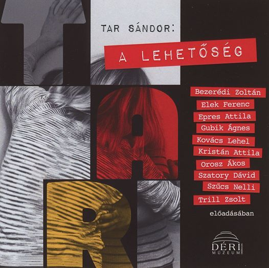

<!DOCTYPE html>
<html lang="en">
  <head>
    <meta charset="UTF-8" />
    <meta name="viewport" content="width=device-width, initial-scale=1.0" />
    <meta http-equiv="X-UA-Compatible" content="ie=edge" />
    <meta
      name="description"
      content="A Debreceni Irodalom Háza honlapja Tar Sándor íróról."
    />
    <meta name="robots" content="index,follow" />
    <link rel="icon" href="../img/favicon.ico" />
    <link
      href="https://fonts.googleapis.com/css2?family=Anton&family=Lobster&family=Montserrat&family=Roboto:wght@400;700;900&display=swap"
      rel="stylesheet"
    /> 
    <link rel="preconnect" href="https://fonts.gstatic.com">
    <link href="https://fonts.googleapis.com/css2?family=Kelly+Slab&display=swap" rel="stylesheet"> 
    <link rel="stylesheet" href="../styles/style.css" />
    
    <link rel="stylesheet" href="https://cdnjs.cloudflare.com/ajax/libs/font-awesome/5.15.2/css/all.min.css">
    <link rel="preconnect" href="https://fonts.gstatic.com">
<link href="https://fonts.googleapis.com/css2?family=Play&display=swap" rel="stylesheet"> 
    <title>Tar Sándor | Tájékoztató</title>
  </head>
</html>
</head>
<body>
  
  <header class="main-head">
    
    <nav>
      <div id="logo">
        <a href="../index.html"> 
  
  
          
        </a>
      </div>
      <ul id="main-nav">
        <li><a id="underline" href="../eletut/index.html">Életút</a></li>
        <li><a class="current" href="../muvek/muvek-main.html">Művek</a></li>
        <li><a id="underline" href="../gallery/index.html">Fotók</a></li>
        <li><a id="underline" href="../hanganyagok/index.html">Hanganyagok</a></li>
        <li><a id="underline" href="../tarrol/tarrol.html">T.S.-ról</a></li>
      </ul>

    <!-- Burger nav-------------------------------->

              
    <div class="burger-container">
      <nav class="navbar">
          <ul class="nav-links">
              <li><a href="../eletut/index.html"">Életút</a></li>
              <li><a href="../muvek/muvek-main.html">Művek</a></li>
              <li><a href="../gallery/index.html">Fotók</a></li>
              <li><a href="../hanganyagok/index.html">Hanganyagok</a></li>
              <li><a href="../tarrol/tarrol.html">T.S.-ról</a></li>
              <li><a href="../impresszum.html">Impresszum</a></li>

            
          </ul>
          <i class="fas fa-bars fa-2x" id="burger"></i>
      </nav>
      
    </div>


    <!-- Burger nav end--------------------------->


    </nav>
    
  </header>

  <main>
    <section class="norajon">
      <div class="norajon-title"><div>
        <h1 class="component-subtitle"><a href="./kotet.html">Kötetek</a></h1>

      </div>
        
        <h2>Tar Sándor: Tájékoztató</h2>
        
      </div> 

      <div class="tajekoztatokonyv">
          <div class="tajekoztato-borito">
              
          </div>
          <div class="tajekoztato-text">
              <p style="font-weight: bolder;" class="tajekoztato-bekelit-title">
                  A Tájékoztatóról
              </p>
              <p>
                  Tar Sándor 1967 és 1970 között a drezdai VEB Trafo- und Röntgenwerk betanított munkása, majd 1975 és 1976 között ugyanitt otthonnevelő volt. Az itt szerzett élményeiből és tapasztalataiból írta meg Tájékoztató című szociografikus írását, amely a Mozgó Világ 1976-os szociográfiai pályázatán megemelt első díjat kapott. A cenzúra miatt azonban végül a Kenedi János által szerkesztette szamizdat kiadványban, a Profilban látott napvilágot.
              </p>
              <p>
                  A Tájékoztató olvasható szociográfiaként, az író sorsa metaforikus alakzataként és az emberi kapcsolatok hiányáról, a végzetes párbeszéd nélküli egymás mellett élésről, az önreflexió hiányáról számot adó írásként is.
              </p>
              <p>
                  A most kiadott kötet tartalmazza a Tájékoztató eredeti szövegét, kiegészítve az író hagyatékában található korabeli képekkel, dokumentumokkal és levelekkel, Tar Sándor ebben az időben írt naplófeljegyzéseivel és a szöveghez többféle módon közelítő tanulmányokkal.
              </p>

          </div>
      </div>
      <div class="tajekoztato-hangjatek">

        <div class="hangjatek-meta">

            <div class="hangjatek-borito">
                
            </div>
            


            <div class="hangjatek-text">
                <p style="font-weight: bolder;" class="tajekoztato-bekelit-title">
                    Tar Sándor: A lehetőség (hangjáték)
                </p>
                <p>
                    „Hová mész, fiú?<br>
                    Megyek az NDK-ba dolgozni. Úgy hallottam, ott jól keresnek, meg amúgy is érdekes. Sokat mesélnek róla. Megtanulom a nyelvet. Világot látok. Városokat.<br>
                    Ott majd én én lehetek. Csak én.”
                    
                </p>
                <p>
                    A 60-as, 70-es években sok magyar fiatal hagyta el az országot, hogy az akkor még létező Kelet-Németországban, vagy, ahogy hivatalosan nevezték, a Német Demokratikus Köztársaságban próbáljon szerencsét. Ezek közé, a reményteljes célokkal elinduló emberek közé tartozott az író, Tar Sándor maga is, aki először 1967 és 1971 között mint gyári segédmunkás, majd pedig 1975-ben mint a drezdai munkásotthon nevelője saját bőrén tapasztalta meg, mit is jelent a valóságban a szocialista vendégmunkáslét.
                </p>
                <p>
                    Az ekkor szerzett tapasztalatai, feljegyzései, valamint a sorstársaktól lejegyzett történetek alapján született meg a Tájékoztató című szociográfiája, mellyel 1976-ban megnyerte a Mozgó Világ című folyóirat pályázatát. Műve a folyóiratban nem is jelenhetett meg. Végül a Profil című szamizdat lap vállalkozott a közlésére. 1989-ben Tar Mért jó a póknak című kötetében A lehetőség címmel jutott szélesebb nyilvánossághoz. 2017-ben pedig fotókkal és korabeli dokumentumokkal kiegészítve jelent meg újra. 
                </p>
                <p>
                    2019-ben hangjáték készült írásából, melyben Bezerédi Zoltán, Elek Ferenc, Epres Attila, Gubík Ági, Kovács Lehel, Kristán Attila, Orosz Ákos, Szatory Dávid, Szűcs Nelli és Trill Zsolt működtek közre. A hangjáték szerkesztője Lakner Lajos, rendezője Markovits Ferenc. Közreműködő partner a Pro Progressione Kft.
                </p>
            </div>


            
        </div>
            


            <div class="tajekoztato-lejatszo">

                <section class="bakelit">

                    <div class="turntable">
                      <div class="record">
                        <div class="inner"></div>
                      </div>
                      <div class="overlay-bakelit"></div>
                      <div class="arm-holder">
                        <div class="arm"></div>
                      </div>
                      <div class="dial"></div>
                    </div>
                    <div class="bakelit-text-sec" >
                      <p class="bekelit-title tajekoztato-bekelit-title">Tar Sándor: A lehetőség (részlet)</p>
                      <p class="bekelit-sub-text"></p>
                    </div>
                </section>
                
                  <audio id="myAudio" ontimeupdate="onTimeUpdate()">
                    <!-- <source src="audio.ogg" type="audio/ogg"> -->
                    <source id="source-audio" src="" type="audio/mpeg">
                    Your browser does not support the audio element.
                  </audio>
                  
                  <div class="player-ctn">
                    <div class="infos-ctn">
                      <div class="timer">00:00</div>
                      <div class="title"></div>
                      <div class="duration">00:00</div>
                    </div>
                    <div id="myProgress">
                      <div id="myBar"></div>
                    </div>
                    <div class="btn-ctn">
                       <div class="btn-action first-btn" onclick="previous()">
                          <div id="btn-faws-back">
                            <i class='fas fa-step-backward'></i>
                          </div>
                       </div>
                       <div class="btn-action" onclick="rewind()">
                          <div id="btn-faws-rewind">
                            <i class='fas fa-backward'></i>
                          </div>
                       </div>
                       <div class="btn-action" onclick="toggleAudio()">
                          <div id="btn-faws-play-pause">
                            <i class='fas fa-play' id="icon-play"></i>
                            <i class='fas fa-pause' id="icon-pause" style="display: none"></i>
                          </div>
                       </div>
                       <div class="btn-play" onclick="forward()">
                          <div id="btn-faws-forward">
                            <i class='fas fa-forward'></i>
                          </div>
                       </div>
                       <div class="btn-action" onclick="next()">
                          <div id="btn-faws-next">
                            <i class='fas fa-step-forward'></i>
                          </div>
                       </div>
                       <div class="btn-mute" id="toggleMute" onclick="toggleMute()">
                          <div id="btn-faws-volume">
                            <i id="icon-vol-up" class='fas fa-volume-up'></i>
                            <i id="icon-vol-mute" class='fas fa-volume-mute' style="display: none"></i>
                          </div>
                       </div>
                    </div>
                    <div class="playlist-ctn"></div>
                  </div>


                  

            </div>

      </div>

    

    </section>
  </main>
  <footer>
    <div class="footer-make">
      <p>
        Készült Debrecenben ©2021  |  &#169 <a target="_blank" href="https://www.derimuzeum.hu/irodalomhaza/">Debreceni Irodalom Háza,</a> <a target="_blank" href="https://www.derimuzeum.hu/">Déri Múzeum</a>  
      </p>
    </div>
    <div class="footer-menu">
      <a href="../impresszum.html">Impresszum</a>
      <a href="https://www.derimuzeum.hu/ckfinder/userfiles/files/%C3%BCvegzseb/adatvedelmi_szabalyzat.pdf" target="_blank">Adatvédelmi tájékoztató</a>

    </div>
  </footer>
  <script src="https://cdnjs.cloudflare.com/ajax/libs/jquery/2.1.3/jquery.min.js"></script>
  <script src="../burgermenu.js"></script>
  <script src="./tajekoztato.js"></script>
</body>
</html>
